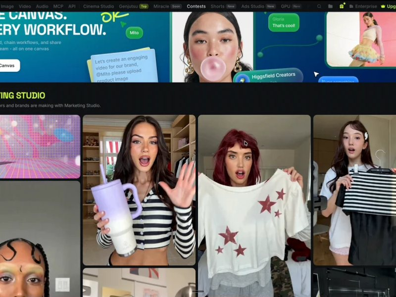
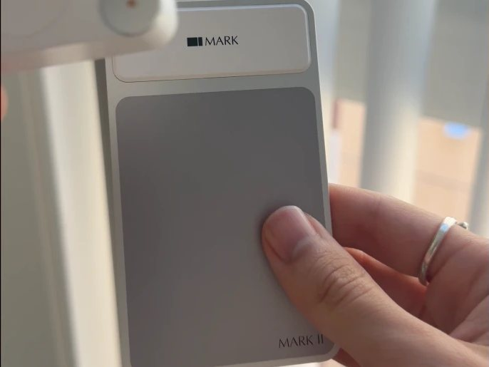
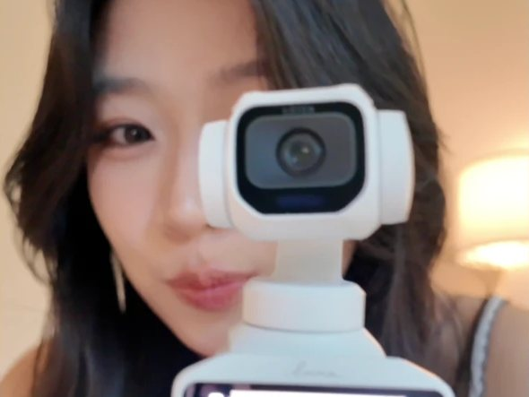
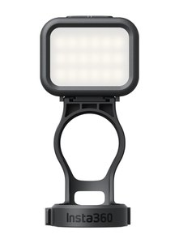

🥐 biz model: observe → create → build fun stuff商业模式:看见 → 做出来 → 做点好玩的
☁️ market size: TBD市场规模:还不知道
☕ distribution strategy: tell everyone分发策略:逢人就说
🍒 mom of 是 @113.world 的妈
i love building startups, cooking up fun projects, skydiving, and experiencing the world.
Goal before i die: build things that change the world for the better.
我喜欢做公司、做好玩的小东西、跳伞,还有到处去看看这个世界。
死之前想干成的事:做出能让世界变好一点的东西。
You commented TECH on this one.
Here's what I promised.
你在那条片子下面评了 TECH。
这就是我答应你的东西。
tech worth the money.
值得花钱的科技。
a little roundup of things i genuinely love using, with some good deals to go with them :)
几样我真心爱用的东西,顺便配上一些好价 :)

higgsfield screenshotHiggsfield
- multiple image & video models in one place
- create videos, ads & short films
- connect with Claude for creative workflows
- Seedream for images, Seedance for videos
- Marketing Studio & Ads Studio for product content
- Shorts Studio: make short videos right inside Claude
- 一个地方用好几个生图、生视频模型
- 做视频、广告和短片
- 接上 Claude 做创作流程
- 生图有 Seedream,生视频有 Seedance
- Marketing Studio 和 Ads Studio 专门做产品内容
- Shorts Studio:直接在 Claude 里做短视频
my note我的小笔记
i genuinely think AI video creation is one of the most valuable skills to learn right now.
Higgsfield is one of the platforms i use a lot. it brings powerful models like Seedream for images and Seedance for videos into one place.
you can make social content, ads, short films, pretty much whatever you have in mind.
you can also connect it with Claude, which makes the whole process so much easier.
if you've been wanting to learn AI video creation, i think this is a really good place to explore.
我真心觉得,AI 视频创作是现在最值得学的技能之一。
Higgsfield 是我常用的平台之一。它把很强的模型放在了一起,生图有 Seedream,生视频有 Seedance。
社交内容、广告、短片,基本上你想到的都能做。
它还能接上 Claude,整个流程会轻松很多。
如果你一直想学 AI 视频创作,我觉得这里很值得逛一逛。
Meta Glasses
- AI assistant whenever i need one
- hands-free POV filming, in 3K
- feels like having AI with me throughout the day
- open-ear speakers for music & calls
- real-time translation
- up to 8 hours of battery
- 随叫随到的 AI 助理
- 不用手的第一视角拍摄,3K 画质
- 一整天都像有 AI 陪着
- 开放式耳机,听歌打电话都行
- 实时翻译
- 续航最长 8 小时
my note我的小笔记
probably the closest i've felt to having an AI assistant just... around me.
i put them on, and whenever i need AI, i can just talk to it. no need to pull out my phone or open an app.
and being able to film exactly what i'm seeing, hands-free, is such a nice bonus.
大概是我离「AI 助理就在身边」最近的一次。
戴上之后,需要 AI 的时候直接跟它说话就行。不用掏手机,也不用打开 app。
还能不用手,直接拍下我眼睛看到的画面,这是额外的惊喜。
Nov 20 to 30. 25% off applies to eligible Ray-Ban Meta Gen 2 models at Sunglass Hut.
11 月 20 日到 30 日,Sunglass Hut 上符合条件的 Ray-Ban Meta 第二代打 75 折。
Claim 25% off Meta Glasses领 Meta 眼镜 75 折 ↗
mark photoMark Bookmark
- scan & save quotes from physical books
- record thoughts with voice notes
- revisit everything on my phone
- works on paper and on screens
- reads handwriting, in 100+ languages
- syncs to Notion & Readwise
- a week of battery, charges with Type-C
- 扫描并保存纸质书里的句子
- 用语音记下想法
- 在手机上随时翻回来看
- 纸上和屏幕上都能用
- 认得手写字,支持 100 多种语言
- 能同步到 Notion 和 Readwise
- 一次充电用一周,Type-C 充电
my note我的小笔记
if you know me, you know i love physical books. and i write notes everywhere.
this little bookmark lets me scan a sentence straight from the page, talk through my thoughts, and save everything to my phone.
so now i can actually find all my notes again without flipping through the whole book.
and the best part? it's still an actual bookmark. i just leave it in my book. i think that's such a lovely little invention.
认识我的人都知道,我爱纸质书,而且到处写笔记。
这枚小书签可以直接扫下书页上的句子,我再口述自己的想法,全部存进手机。
所以现在我真的找得回所有笔记了,不用把整本书再翻一遍。
最棒的是?它本来就是一枚书签,我就把它夹在书里。我觉得这是个很可爱的小发明。
- buy 1$10 off
- buy 2$50 off
- buy 3$100 off
- 买 1 个减 $10
- 买 2 个减 $50
- 买 3 个减 $100
it comes off right on Mark's site, no code needed. grab one for your reading buddies :)
直接在 Mark 官网上减,不用输码。可以拉上一起读书的朋友一起买 :)

luna pro photoLuna Pro
- detachable screen + remote control, even from 20m away
- gorgeous photo & video quality
- AI tracking (with the cutest little cat ears)
- Leica lens + 1" 8K sensor
- 4K60fps portrait videos, ready for reels
- beauty mode & filters built in
- up to 4 hours of shooting + 47GB built-in storage
- 可拆屏幕 + 遥控,20 米外也能控
- 照片和视频画质超美
- AI 追踪(带着最可爱的小猫耳朵)
- 徕卡镜头 + 1 英寸 8K 传感器
- 4K60fps 竖拍,直接能发 reels
- 自带美颜和滤镜
- 最长拍 4 小时,内置 47GB 存储
my note我的小笔记
i've been using DJI for the longest time, but this little camera completely won me over.
the detachable screen is probably my favorite thing. i can put the camera anywhere and still see myself and control it from a distance. how convenient is that??
and i genuinely love how pretty the photos and videos turn out. the colors, the lighting, everything.
also, the AI tracking makes its little cat ears follow me around like a tiny pet. obsessed.
我用了很久的 DJI,但这台小相机彻底把我收服了。
可拆的屏幕大概是我最喜欢的一点。相机放哪都行,我在远处也能看到自己、遥控它。这也太方便了吧??
而且拍出来的照片和视频真的好好看。颜色、光线,全部。
还有 AI 追踪,那对小猫耳朵会像小宠物一样跟着我转。爱死了。

snaps on magnetically, 4 color temperatures, up to 380 min of light. i use mine all the time.
磁吸一贴就上,4 档色温,最长亮 380 分钟。我自己天天在用。
⏰ heads up: the 10% off + free fill light only start on Nov 19. ask your Siri to set an alarm now 😉⏰ it's live! 10% off + a free fill light with my link.
⏰ 注意:9 折和送补光灯要到 11 月 19 日才开始。现在就让 Siri 帮你定个闹钟 😉⏰ 已经开始啦!用我的链接 9 折,还送一盏补光灯。